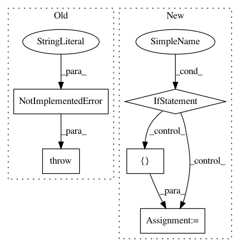

17522b968c8a1d2b29d0034fc57cec59ed9972de,pymanopt/tools/autodiff/_tensorflow.py,TensorflowBackend,compute_hessian,#TensorflowBackend#,76
Before Change
@assert_backend_available
def compute_hessian(self, objective, argument):
// TODO
raise NotImplementedError("Tensorflow backend does not yet "
"implement compute_hessian.")
After Change
@assert_backend_available
def compute_hessian(self, objective, argument):
if not isinstance(argument, list):
argA = tf.Variable(tf.zeros(tf.shape(argument)))
tfhess = _hessian_vector_product(objective, [argument], [argA])
def hess(x, a):
feed_dict = {argument: x, argA: a}
return self._session.run(tfhess[0], feed_dict)
else:
argA = [tf.Variable(tf.zeros(tf.shape(arg)))
for arg in argument]
tfhess = _hessian_vector_product(objective, argument, argA)
def hess(x, a):
feed_dict = {i: d for i, d in zip(argument+argA, x+a)}
return self._session.run(tfhess, feed_dict)
return hess
In pattern: SUPERPATTERN
Frequency: 3
Non-data size: 5
Instances
Project Name: pymanopt/pymanopt
Commit Name: 17522b968c8a1d2b29d0034fc57cec59ed9972de
Time: 2016-03-15
Author: git@sweichwald.de
File Name: pymanopt/tools/autodiff/_tensorflow.py
Class Name: TensorflowBackend
Method Name: compute_hessian
Project Name: havakv/pycox
Commit Name: fdf356a91622033dc8e88ccf64c2f421e9d3a8a8
Time: 2018-02-27
Author: kvamme@samba8.ad.nr.no
File Name: pycox/cox.py
Class Name: CoxTime
Method Name: predict_cumulative_hazard_at_times
Project Name: mortendahl/tf-encrypted
Commit Name: 0be81ada984e231be55e60466da93ba551bcf3a1
Time: 2020-07-28
Author: zhicong303@gmail.com
File Name: tf_encrypted/protocol/aby3/aby3.py
Class Name: ABY3
Method Name: setup_pairwise_randomness